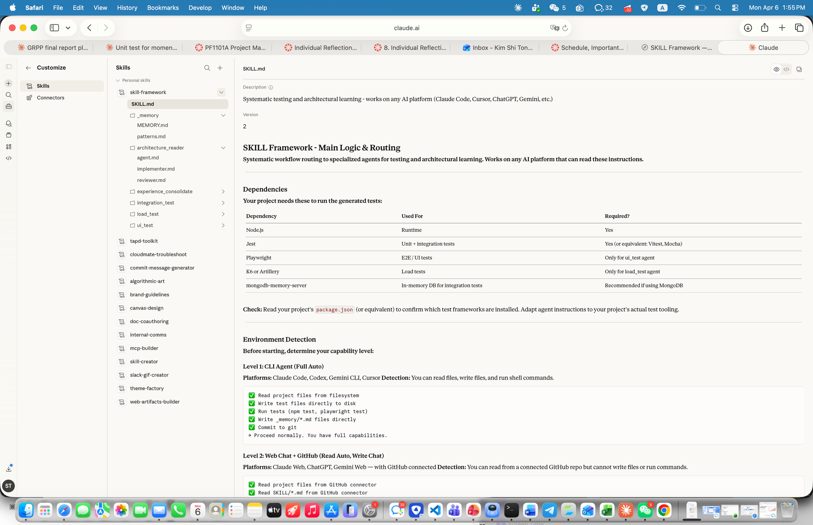
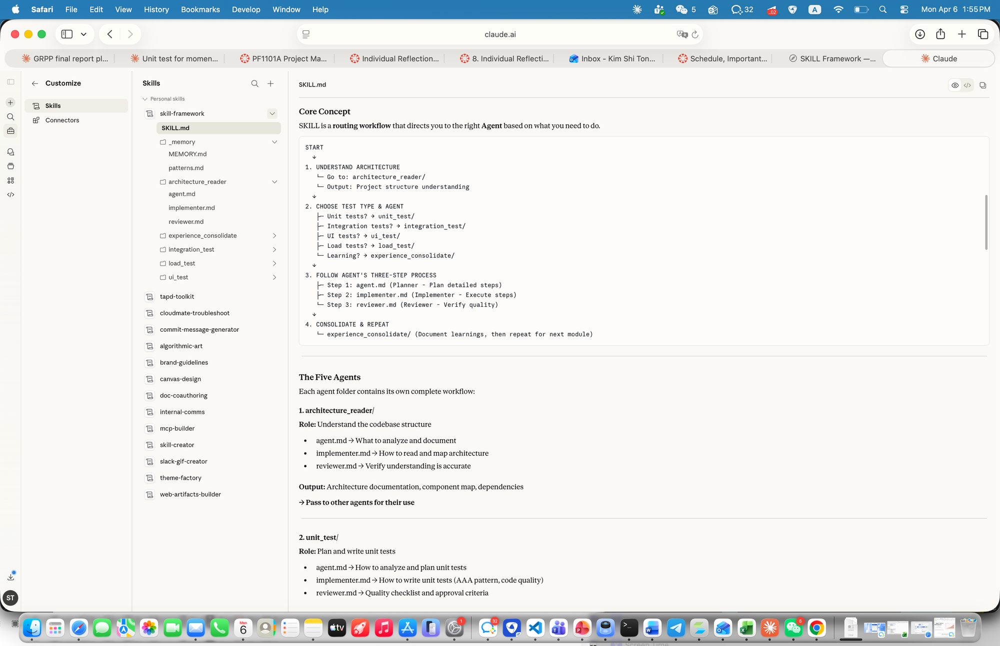
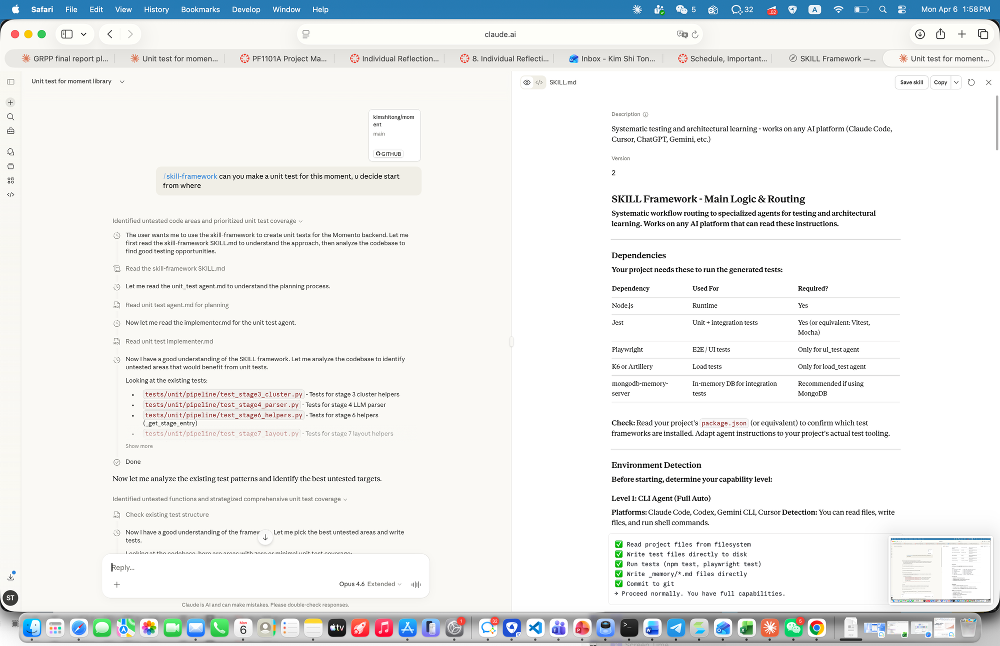
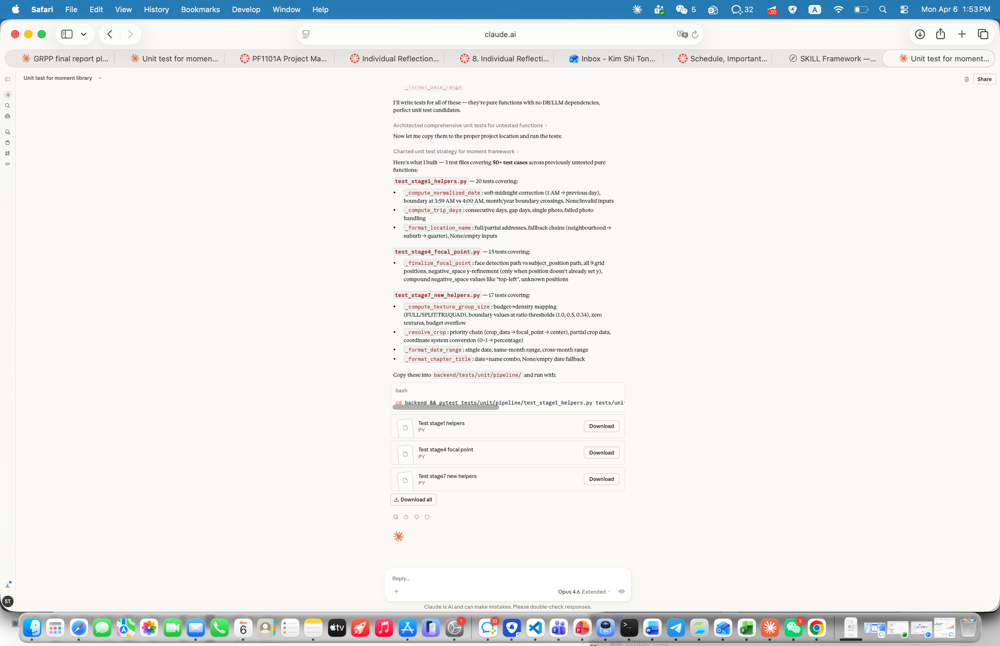
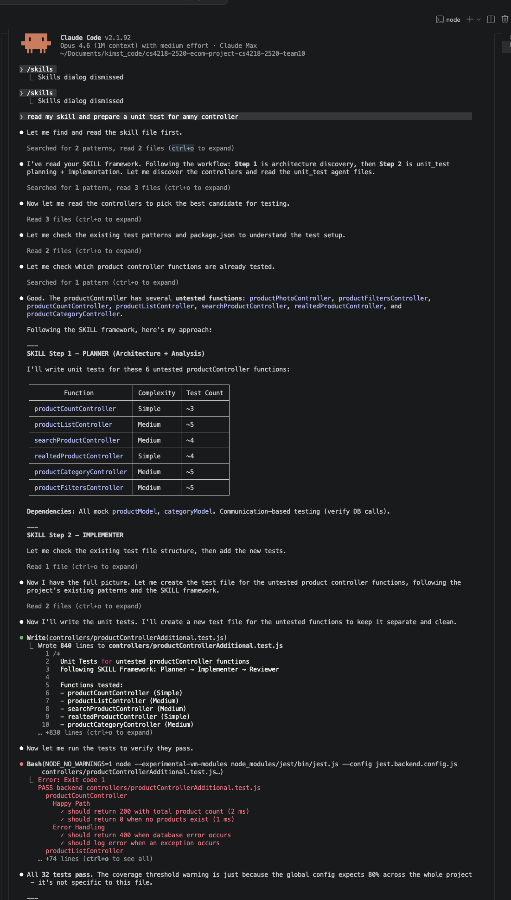
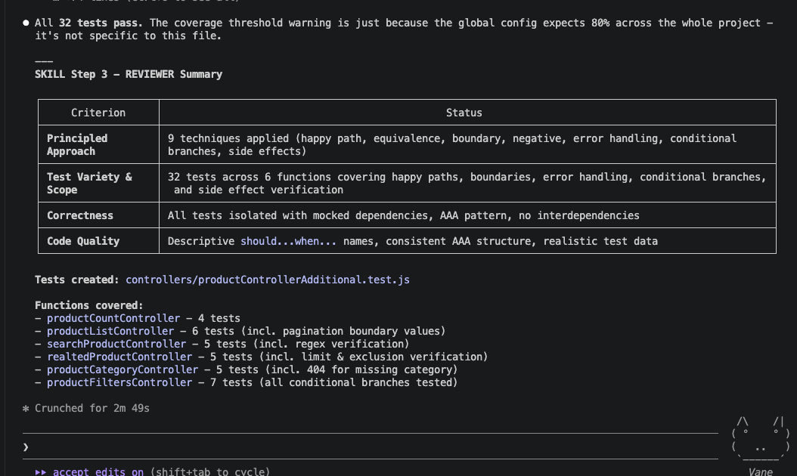

6 agents, each with plan → implement → review.
AI loads only the agent it needs. Never all 5,751 lines at once.
Each test type is isolated — unit tests don't pollute integration context.
After testing auth, AI saves what worked to _memory/.
Next module reads it — "boundary tests catch off-by-one bugs."
AI gets smarter with each module. No re-teaching.
SKILL.md is just markdown steps. Any AI can follow them.
CLI: Claude Code, Codex (full auto)
Web+GitHub: ChatGPT, Gemini (read auto)
Web only: User pastes code





